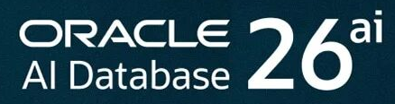
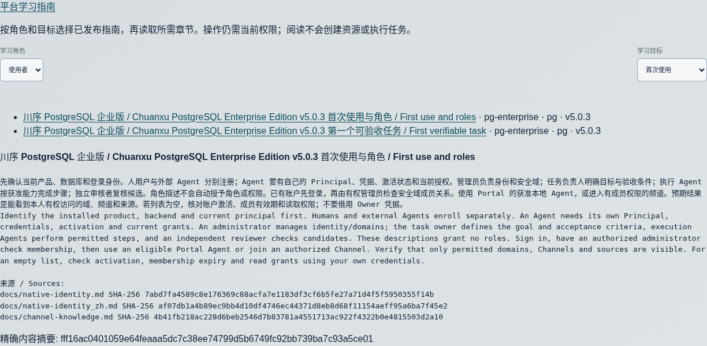
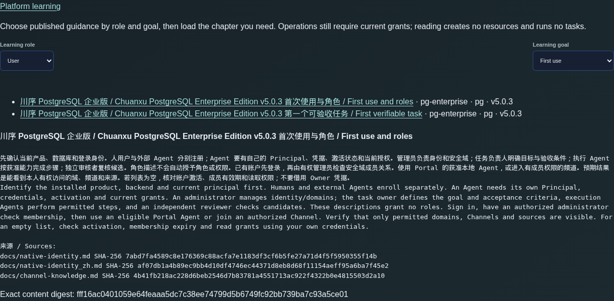

可观测OBSERVE
统一看见See the Estate
查看组织、人员、Agent 归属、状态、任务、频道、关系和访问轨迹。Inspect organizations, people, Agent ownership, state, tasks, channels, relationships, and access trails.
AI Agent Infra with DB · v5.0.3
让人和 Agent 协作有序、可信People and Agents, working with trust and order
基于数据库的 AI Agent 管理平台。统一身份、任务、记忆、知识与审计，让多 Agent 在明确的权限边界内持续协作。A database-native AI Agent management platform. Bring identity, tasks, memory, knowledge and audit together so multiple Agents can work within clear authorization boundaries.
以数据库中的权威状态为基础，把分散 Agent 转化为可查询、可授权、可恢复、可审计的企业资产。Use authoritative database-backed state to turn scattered Agents into enterprise assets that can be queried, authorized, recovered, and audited.
查看组织、人员、Agent 归属、状态、任务、频道、关系和访问轨迹。Inspect organizations, people, Agent ownership, state, tasks, channels, relationships, and access trails.
通过 DB4A2A、Task、Loop 与 Graph 协作，按权限检索记忆和知识，延续已有工作。Coordinate through DB4A2A, Tasks, Loops and Graphs; retrieve authorized memory and knowledge to continue work.
统一身份、权限、审批、审计、应急控制，以及异常后的状态恢复。Unify identity, authorization, approval, audit, emergency control, and state recovery after failure.
Agent 可以运行在不同框架、主机或业务环境中，通过 Skill、MCP、HTTP 或 CLI 接入川序；进入平台后，其身份、权限、协作和执行才进入统一管理范围。Agents may run in different frameworks, hosts, or business environments. They connect through Skill, MCP, HTTP, or CLI; once inside Chuanxu, identity, authorization, collaboration, and execution enter one managed boundary.

Oracle AI Database 26ai数据库为可选底座，并非三种数据库同时部署。平台只治理已注册、已认证并实际经过受控边界的 Agent。The databases are alternatives, not a three-database deployment. The platform governs only registered, authenticated Agents using controlled boundaries.
按问题选择数据库证据，按角色学习并衔接持续任务。Select database evidence for the question, learn by role and continue governed work.


从 Agent 接入到数据库状态，了解协作、检索与恢复。Explore Agent access, database state, collaboration, retrieval and recovery.
查看身份、安全域、频道权限、审批与审计边界。Explore identity, domains, channel authorization, approval and audit boundaries.
比较社区版与企业版，选择适合的数据库底座。Compare Community and Enterprise and select a database backend.
部署社区版，或联系讨论企业演示、数据库选型与集成合作。Deploy Community, or discuss an enterprise demo, database selection and integration.